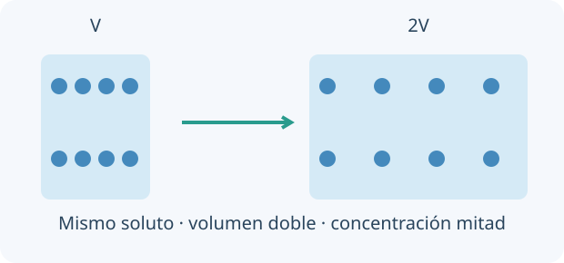

Una solución es una mezcla uniforme. El soluto es el componente cuya cantidad te interesa expresar; el solvente es el medio en que se distribuye. Concentración compara cantidad de soluto con una cantidad de solución o solvente, según la definición elegida.

Dilución ideal: el soluto transferido se conserva si no hay pérdida ni reacción.
La molaridad usa moles de soluto por litro de solución. La molalidad usa moles por kilogramo de solvente; por eso no cambia con la expansión térmica del volumen. La fracción molar divide los moles de un componente por la suma de moles de todos los componentes.
El solvente no siempre es agua. La concentración no es una cantidad total: dos recipientes de igual molaridad pueden contener diferentes moles si sus volúmenes son distintos. Para pasar entre concentraciones por masa y por volumen puede hacer falta la densidad.
c = n/Vsolución · b = n/msolvente(kg) · xᵢ = nᵢ/Σn
TU TURNO · INTENTÁ RESOLVER ANTES DE MIRAR
Disolvé 0,20 mol hasta un volumen final de 0,50 L.
Tu desafío: Calculá la molaridad y los moles contenidos en una porción de 0,10 L de esa solución.
Ver el ejemplo resuelto paso a paso
c = 0,20/0,50 = 0,40 mol/L.
Si retirás 0,10 L de solución homogénea, esa porción contiene 0,040 mol.
LECCIÓN 2 / 4 · LEÉ, RESOLVÉ Y COMPROBÁ
Porcentajes y trazas
Empezá desde la idea.
Antes de operar con un porcentaje, escribí qué representa el cien: cien gramos de solución, cien mililitros o alguna otra base. En ppm, indicá igualmente la base. Esta decisión determina las unidades y las conversiones que necesitás.
5 % m/V significa 5 g de soluto por 100 mL de solución. 5 % m/m significa 5 g por 100 g de solución. 5 % V/V indica un volumen de componente referido a 100 mL de solución; los volúmenes al mezclar no son necesariamente aditivos.
En fracción másica, 1 ppm = 1 mg/kg. En soluciones acuosas muy diluidas de densidad aproximada 1 kg/L, se aproxima a 1 mg/L. Especificá la base de una expresión en ppm para evitar ambigüedad.
% m/V = g de soluto / mL de solución × 100
TU TURNO · INTENTÁ RESOLVER ANTES DE MIRAR
Una solución tiene 2 g de soluto en 200 mL finales.
Tu desafío: Expresá la concentración en % m/V y en g/L. Indicá qué dato falta para obtener % m/m.
Ver el ejemplo resuelto paso a paso
Es 1 % m/V, porque hay 1 g cada 100 mL.
También es 10 g/L. No podés deducir % m/m exacto sin la masa total.
LECCIÓN 3 / 4 · LEÉ, RESOLVÉ Y COMPROBÁ
Preparar y diluir con material volumétrico
Empezá desde la idea.
Diluir significa añadir solvente a una porción de solución, no fabricar ni destruir soluto. La cantidad de soluto de esa porción se conserva si no hay reacción ni pérdida. El volumen final se mide después de mezclar, no se adivina sumando volúmenes.
Para preparar una solución desde sólido, pesá el soluto, disolvé en una porción de solvente y transferí cuantitativamente al matraz. Enjuagá el recipiente, completá hasta la marca y homogeneizá. El volumen final se mide después de disolver.
En una dilución sin reacción ni pérdidas, los moles de soluto se conservan. Una pipeta mide la alícuota; un matraz aforado fija el volumen final. Observá el menisco a la altura de los ojos; un vaso de precipitados no sustituye material aforado para mediciones precisas.
c₁V₁ = c₂V₂
TU TURNO · INTENTÁ RESOLVER ANTES DE MIRAR
Prepará 100 mL de 0,020 M desde 0,100 M.
Tu desafío: Calculá la alícuota necesaria y describí cómo preparar el volumen final con material aforado.
Ver el ejemplo resuelto paso a paso
V₁ = 0,020 × 100/0,100 = 20,0 mL.
Pipeteá 20,0 mL y completá hasta 100,0 mL finales; no agregues 100 mL adicionales.
LECCIÓN 4 / 4 · LEÉ, RESOLVÉ Y COMPROBÁ
De la ecuación a la cantidad de producto
Empezá desde la idea.
Pensá la ecuación como una receta de cantidades de sustancia. Primero obtené moles del reactivo conocido; después aplicá la razón entre coeficientes; finalmente convertí a la magnitud solicitada. No uses directamente la razón de masas como si fueran coeficientes.
Una ecuación balanceada expresa proporciones de moles, no de gramos. Para estequiometría directa convertí la masa conocida a moles, aplicá la relación entre coeficientes y convertí al pedido. En esta serie suponemos sustancias puras y los otros reactivos suficientes.
Anotá unidades en cada paso: funcionan como control de la cadena de conversiones. Si se pide un gas, elegí PV = nRT para las condiciones dadas. Si se pide una solución, su volumen se obtiene a partir de los moles y su concentración.
CaCO₃ → CaO + CO₂. Se descomponen 10,0 g de CaCO₃ (M = 100,0).
Tu desafío: Calculá los moles y la masa de CO₂ producidos, suponiendo descomposición completa.
Ver el ejemplo resuelto paso a paso
n = 0,100 mol; la relación con CO₂ es 1:1.
Se forman 0,100 mol de CO₂, aproximadamente 4,40 g.
02
PREDECÍ · INVESTIGÁ · EXPLICÁ
La química en tus manos.
Cargando la mesa de trabajo…
03
LISTO PARA PONER A PRUEBA TU COMPRENSIÓN
Repasá y encontrá qué volver a estudiar.
Ocho preguntas por unidad, con explicación y enlace a la lección correspondiente. Estos resultados se guardan únicamente en este navegador; no se envían al panel docente.